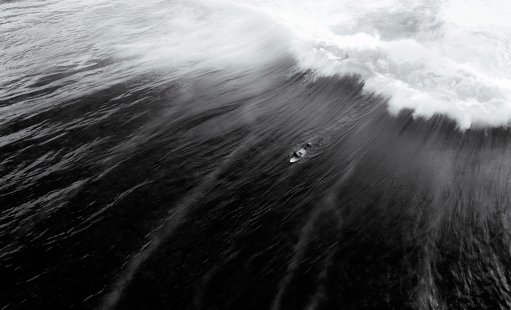

Adriano de Souza, conhecido como "Mineirinho", é um dos maiores nomes do surfe brasileiro. Nascido em 1987, em Guarujá (SP), começou a surfar aos 8 anos com uma prancha usada que seu irmão comprou por 30 reais. Vindo de origem humilde, destacou-se cedo e, aos 15 anos, já era campeão mundial júnior. Sua carreira foi marcada por muita determinação, disciplina e superação. Em 2009, venceu sua primeira etapa do Circuito Mundial (WCT). O auge veio em 2015, quando se tornou campeão mundial de surfe, sendo o segundo brasileiro a conquistar esse título (depois de Gabriel Medina em 2014).
VOLTAR 